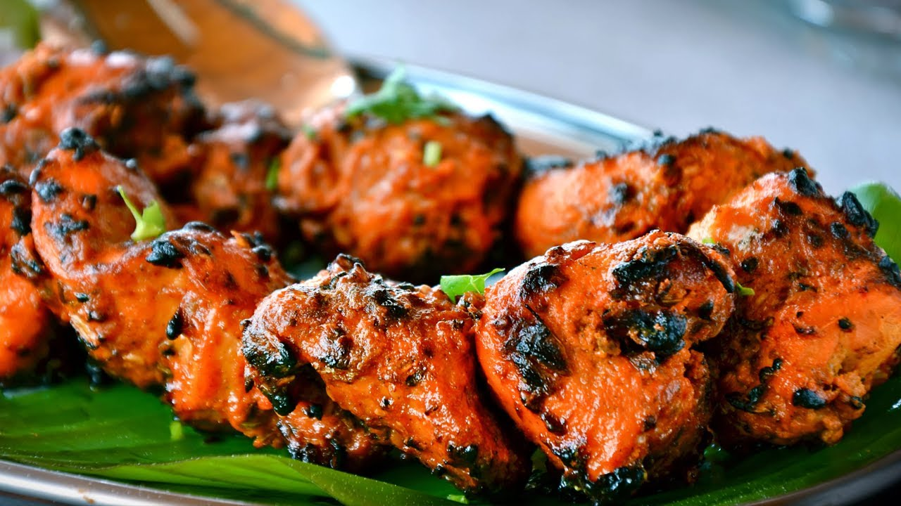

Chicken Tikka

Chicken tikka is a chicken dish popular in India, Bangladesh, Pakistan and the United Kingdom. It is
traditionally small pieces of boneless chicken baked using skewers on a brazier called angeethi or over charcoal
after marinating in Indian spices and dahi —essentially a boneless version of tandoori chicken.
- Chicken
- Cream
- onions
- garlic and ginger
- Spices